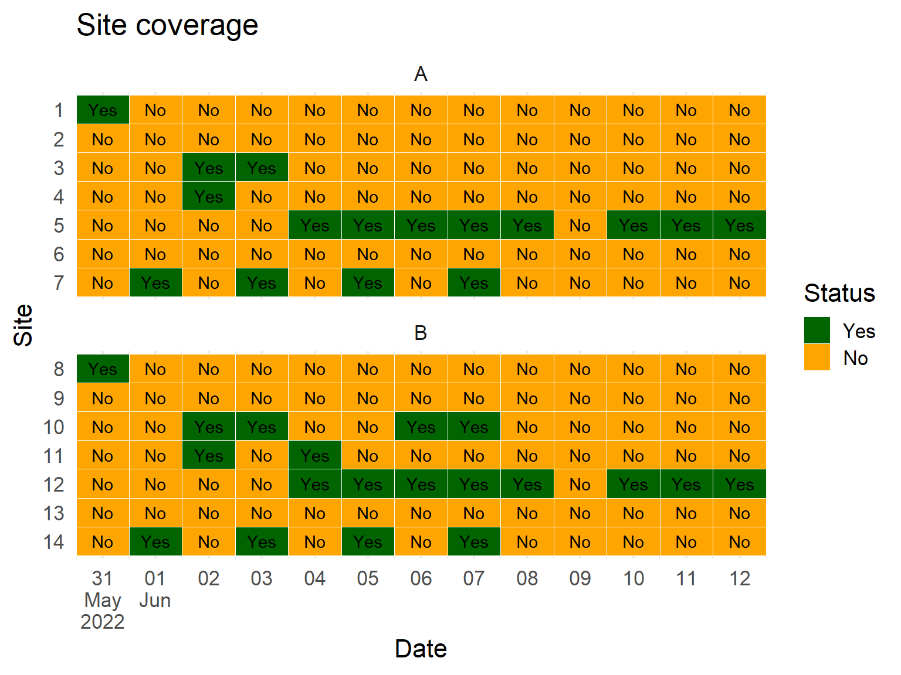

Introduction to R for Applied Epidemiology
Welcome
Welcome to the live course “Introduction to R for applied epidemiology”, offered by Applied Epi - a nonprofit organisation that offers open-source tools, training, and support to frontline public health practitioners.

R setup, basic syntax, and importing data
This exercise focuses on organizing your files in an RStudio project and how to import your dataset into R.
Format
This exercise will guide you through a set of tasks.
You should perform these tasks in RStudio on your local
computer.
Getting Help
There are several ways to get help:
- Look for the “helpers†(see below)
- Ask your live course instructor/facilitator for help
- Ask a colleague or other participant in the course for tips
- Post a question in Applied Epi Community in the category for questions about Applied Epi Training
Here is what those “helpers†will look like:
Click to read a hint
Here you will see a helpful hint!
Click to see a solution (try it yourself first!)
linelist %>%
filter(
age > 25,
district == "Bolo"
)Here is more explanation about why the solution works.
Quiz questions
Please complete the quiz questions that you encounter throughout the tutorial. Answering will help you to comprehend the material, and will also help us to improve the exercises for future students.
To practice, please answer the following questions:
Icons
You will see these icons throughout the exercises:
| Icon | Meaning |
|---|---|
| Observe | |
| Alert! | |
| An informative note | |
| Time for you to code! | |
| Change to another window | |
| Remember this for later |
Learning objectives
In this exercise you will:
- Arrange an R project with well-named files
- Import a CSV dataset into R
- Conduct exploratory analyses
Setup
To begin this module, open RStudio project by double-clicking the “intro_course.Rproj†file in your “intro_course†folder on your desktop.
This will open the RStudio project with all of the connections between files intact. In the far upper-right corner of the RStudio project you will see “intro_course†displayed. If you do not see this, ask your instructor for assistance.
Project organization
File naming can impact your quality of life
File naming can seem like a small thing to focus on, but the ramifications can be significant. Proper file naming can really save you time and headache, and switching your practice can be easy.
Imagine the power of R - you can write code to automatically import the most recent data files by the date in their file name! But this can be hindered by poor file naming practices.
Even if you never try coding such as that, you surely know that bad file naming practices can cause significant problems for version control and archiving.
Good and bad file names
Have you ever seen files like these?
⌠notes.docx
⌠a.R
⌠2b.xlsx
⌠notes.txt
How about something like this?
⌠case control San Jose factory.pptx
⌠abstract for Mark?.xlsx
⌠December 20 update.R
⌠draft “malaria study†report(1).docs
These are very difficult to work with. Try to follow these principles when naming files (your future self will thank you!):
- Be nice to machines
- Be nice to humans
- Make sorting and searching easy
Let’s discuss tips to achieve each of these principles.
Names that are machine-readable
Don’t use white (empty) space in file names (machines sometimes get confused by spaces)
⌠Draft Vax outreach team.docx
✅ vaccination-outreach_draft01.docx
**Use letters, numbers, hyphens (-), and underscores (_) only** (special characters can have special meanings and confuse machines e.g. ^.*?+|$ )
⌠Ministry report ?.docx
✅ ministry_report_draft01.docx
Never have two file names that differ only by case (some operating systems treat b and B the same, while others treat them as different), and be consistent with your case (usually lowercase is better)
⌠study.docx
⌠Study.docx
⌠Belgium-and-france.docx
✅ study.docx
✅ belgium-and-france.docx
Names that are human-readable
Use hyphens and underscores differently
- Hyphen should mean: “different words, but part of the same
idea”
- Underscore should mean: “different idea”
✅ 20200316_goma_linelist.xlsx
✅ transmission-analysis_california_mmwr.docx
Names that sort easily
Dates should be written as YYYY-MM-DD (the ISO 8601 standard). Usually, it is best to place the dates before other name components to preserve chronology.
File names with this style of dates do not sort in chronological order!
⌠1-April-2012_linelist.xlsx
⌠1-Jan-2009_linelist.xlsx
⌠1-Jan-2012_linelist.xlsx
⌠12-Jan-2012_linelist.xlsx
⌠2-Jan-2012_linelist.xlsx
⌠31-Dec-2009_linelist.xlsx
But this style does sort correctly!
✅ 2009-01-01_linelist.xlsx
✅ 2009-12-01_linelist.xlsx
✅ 2009-12-31_linelist.xlsx
✅ 2012-01-01_linelist.xlsx
✅ 2012-01-02_linelist.xlsx
✅ 2012-04-01_linelist.xlsx
To order files without dates, use numbers as prefixes (left pad with 0 so all numbers have the same length!)
✅ 01_introduction.docx
✅ 02_methods.docx
✅ 03_analysis.docx
… (more chapters)…
✅ 19_appendix-04.docx
✅ 20_appendix-05.docx
✅ 21_appendix-06.docx
In the end, file naming does not come with hard rules - it is a personal choice. However, certain choices can lead to more frustration, lost files, and coding headaches later.
Clean file names
In your File Explorer, view the “intro_course†folder that we gave to you at the beginning of the course, in which you have created the R project.
Here is how your folder structure should look:
- 📠project (“intro_course”)
- 📂 data
- 📠clean
- 📁backup
- 📁backup
- 📂 raw
- 📁backup
- 📁backup
- 📂pop
- 📠shp
- 📠clean
- 📠scripts
- 📂backup
- 📂backup
- 📂 outputs
- 📂 learning materials
- 📂 slides
- 📂 covid_case_study
- 📠surveillance_linelist_20141201.csv
- intro_course.Rproj
- 📂 data
âš ï¸ You may also have some other files like “.Rhistory†- do NOT delete these. Just leave them.
Clean file names
Now enter the folder “data/raw/hospital”.
Regard the files - these are linelists of Ebola patients admitted for care, as sent to you on the 1st of December 2014, from 4 different hospitals (Port Hospital, Military Hospital, St. Mark’s Maternity Hospital (SMMH), and Central Hospital). There are also files containing records from “Other†hospitals, and of patients for whom the hospital is “Missing”.
How can these file names be improved? Both for human readability, but also to facilitate standardized code that we may write to import them into R?
Edit the file names to that they are standardized with best practices above
When finished, view the “solution†below. We suggest that you align your file names with these.
Click to see a solution (try it yourself first!)
- 20141201_hosp_central.csv
- 20141201_hosp_military.csv
- 20141201_hosp_port.csv
- 20141201_hosp_smmh.csv
- 20141201_hosp_other.csv
- 20141201_hosp_missing.csv
Project structure
A few remarks here on folder structure:
Folder structure
- Typically, public health analysis folders will contain subfolders
such as:
- data (often subdivided into “raw†and “clean”, or by time period)
- scripts (or sometimes, just called “R”)
- outputs
- images (if you are embedding images in your R documents)
README files
Most folders should have a README file that explains what lives in the folder, how it is updated, how it is used, etc.
- In a finished project, the README should help users navigate and
understand the contents.
- In a project template, the README contains instructions for you to setup the project!
Now, add a .txt file that is named README.txt. Place the brief information that you learned above about where these data come from (the hospitals) in this file, and save it in the “raw†folder as README.txt.
You can do this by opening NotePad or a similar software, entering the text, and saving it in the folder. If you cannot find a plain text editor, you can use Microsoft Word.
Concepts in this section on project structure were borrowed from this slide deck on project structure by DJ Navarro.
Importing a dataset
To begin working with data, you must import it into the R environment as an object.
Once imported, the dataset will be saved as a data frame object, which consists of columns and rows.
Script organization
Recall that often a script is run from top-to-bottom. Therefore, you will need to organize your script in a logical manner.
Typically, you begin with loading packages, and then continue to importing data.
Location of the data
In order to import data into R, you must tell R where to access the data file on your computer (e.g. a specific folder).
This can be surprisingly difficult (e.g. when data are stored on shared drives). However, by saving the data within our R project the whole process becomes much easier.
rio - the easy package for importing data
There are base R functions for importing data, but they can be confusing and difficult to remember - there are separate functions for each type of file (e.g. .xlsx, .csv, .tsv, .txt, etc).
Thankfully, there is one function that works for almost all
file formats, which is the import() function from
the package rio.
Let us find our data file
Do you see the file “surveillance_linelist_20141201.csv†that is saved in the “root†project folder? This is the baseline folder - the same folder as the “intro_course.Rproj†file. To access the root folder from the R project file you do not need to click into any sub-directories (sub-folders).
Run the import() command
In its most simple form, the import() function accepts a
character value - the file path to the data that you wish to import. In
this case, the data file which we want to import is saved in the root
folder, so you only need to provide the file name and extension, in
quotation marks, as below:
import("surveillance_linelist_20141201.csv")Did you see this error?
Error in import(“surveillance_linelist_20141201.csv”) : could not find function “import”
If so, it means that you did not install and load the rio package. If you need help, review the previous section and look for the
pacman::p_load()command that loads several packages including rio.
Once you get the command to run successfully, you probably saw a lot of text appear in the Console. That was the dataset!
Think: what did your command ask R to do? It asked R to import the dataset… and the default action is to print/display it.
You did not ask R to save the dataset as a named object. How would you do that?
In RStudio, try again to import the data and save it as the
object surv_raw (a short name for “surveillance linelist
raw”).
Click to read a hint
Use the assignment operator <- before the function.
Don’t forget quotation marks around the name of the file.
Click to see a solution (try it yourself first!)
surv_raw <- import("surveillance_linelist_20141201.csv")You should now see the new object surv_raw appear in the
R Environment pane, under the subcategory “Data”. It
should have a short description of the number of observations and
variables. Congratulations, you have now imported a dataset into R!
Importing data from subfolders
In most cases, it is better organizationally to store data in a subfolder - even perhaps by week, or by status as either “raw†or “clean”. In this course, most of the data are initially stored in a subfolder named “data”.
Now, go to your File Explorer to the root folder of the R project.
Cut the file “surveillance_linelist_20141201.csv†from the root folder, and paste it into the “data/raw†subfolder.
And so we are introduced to the topic of file paths.
Any importing function needs to know where to look for the file that you want to import - this is the file path.
A typical file path (“absolute†file path, or a “full†file path) may look like this:
surv_raw <- import("C:/Users/Laura/Documents/intro_course/data/surveillance_linelist_20141201.csv")The problem with this is all of the path before “intro_course†… the C: … the “Laura†… etc. None of these may be present in the computer of Laura’s colleague, and this command would not run. The file path would be “broken”. Or, the next user may be using a Mac, so the slashes would all need to be reversed! Thankfully there is a solution:
The {here} package and relative file paths
The package {here} and its function here() make it easy
to tell R where to find and to save your files - in essence, it builds
relative file paths.
Used in conjunction with an RStudio project, {here} allows you to describe the location of files in your RStudio project in relation to the project’s root directory (the top-level folder). This is useful when the project may be shared or accessed by multiple people/computers or when a script may be moved around within the project.
Used with an RStudio project, it prevents complications due to the unique file paths on different computers (e.g.“C:/Users/Laura/Documents…â€) by “starting†the file path in a place common to all users (the project root).
Make sure you have installed and loaded the package {here}. Then try
running the command here() - leave the parentheses empty.
What do you see?
In “Laura”’s situation, the output might look like this:
"C:/Users/Laura/Documents/intro_course")here() has automatically created the full file path that
comes before the RStudio project root folder (“intro_course”).
It is easy to add sub-folders at the end of the path, like this:
here("data", "raw")This would produce the file path:
"C:/Users/Laura/Documents/intro_course/data/raw")Ending the here() command with a file name and
extension could look like this:
here("data", "raw", "surveillance_linelist_20141201.csv")This would produce the file path:
"C:/Users/Laura/Documents/intro_course/data/raw/surveillance_linelist_20141201.csv")Now comes the secret combination: we insert this here()
command into the import() command! We nest one
function inside another one! Take a look at this:
# import the file from the "data" and "raw" subfolders
surv_raw <- import(here("data", "raw", "surveillance_linelist_20141201.csv"))Note the two parentheses at the end - one for each function. The file
path returned by here() is passed to the first argument of
import() as a character value.
A note on slashes
You may wonder - where are the forward slashes and back slashes in
the here() command? Well, here() allows the
slack-agnostic entry format above because it can adapt to whether you
are working on a Mac or a PC!
On a PC:
- project/data/linelist_20141201.csv
- project/data/linelist_20141208.csv
On a Mac:
- project\data\linelist_20141201.csv
- project\data\linelist_20141208.csv
You do not know who will be using your script later, or what kind of
computer they will have. Therefore, it is easier to simply go with:
here("data", "linelist_20141201.csv").
Import from a subfolder
Now in RStudio, write a command to import
“surveillance_linelist_20141201.csv” from the subfolder “data/raw”
(where you moved it, earlier) and save it in R as surv_raw
using the assignment operator.
Click to read a hint
Begin the command with the object name that you want to assign, then
the assignment operator, and then the import() command.
Within the import() parentheses, place the
here() function, which should list the names of the
sub-folders (in quotes) and include the file name with extension
(.csv).
Click to see a solution (try it yourself first!)
surv_raw <- import(here("data", "raw", "surveillance_linelist_20141201.csv"))Manual file selection
A useful alternative to providing a file path is using the {base} R
function file.choose(). This triggers a pop-up window to
appear, from which you can manually select the file to import.
Your import command would look like this (note the empty parentheses
at the end of file.choose():
surv_raw <- import(file.choose())This approach has the disadvantage of not being as well documented (for reproducibility) but can be extremely useful if you are routinely receiving updated data by email and simply need to select the most up-to-date version saved to a local folder.
In the Epi
R Handbook chapter on importing, there is sample code on how to
write code to automatically import the most recent dataset from a
folder. However, file.choose() can often be a more simple
alternative.
Try to write a command with file.choose() in
your R script and test this process. If you do not see the pop-up
window, check behind your RStudio window.
Review a dataset
Now that you have imported the data, let’s take a look!
Take a peek
The dataset is now saved as a data frame object in the RStudio Environment pane. Find its name there, and click once on the blue circle next to the name. What do you see?
The expanded area beneath the data frame is an overview of all the columns in the data frame. After the name of the column, there is a colon, then an abbreviation that indicates the “class†of the column (we’ll discuss this more later), and then the first few values in the column. How exciting!
For even more detail, collapse this overview and click on the
name of the data frame itself (surv_raw).
This should open a new tab in the upper-left pane, next to the R script. This tab will display the data frame! You can scroll through the data frame, and even apply filters (see the icon in the upper-left of the display).
Try these exercises:
Indexing
Above we asked you to find the value in the 4th column, and the 50th row. Instead of searching manually, you can also write code to isolate and view pieces of the dataframe.
The $ operator can be used on a dataframe to
reference a specific column. It is one of the indexing
operators in R, which returns a sub-part of a larger object. For
example, surv_raw$gender will return the entire column
gender.
Try typing and running the following commands
surv_raw$hospital
surv_raw$case_id
As you typed, slowly, did you see anything appear as you arrived at
typing the $? You should have seen a small menu appear that
showed all the columns in the data frame surv_raw. Using
your arrow keys you can select a column from that menu - if you do not
want to type the rest and potentially make a spelling mistake.
Try writing commands to show other columns, and experiment with this pop-up menu.
Here is something you should know: columns can also be referred to as “vectors†- vectors are a long line of values of the same class. So in fact, a data frame is simply a collection of vectors (columns!).
You can also create other, independent vectors, like you have already
done with c(). But most commonly, you will work with
vectors in the context of a data frame. “Vector” is a good term to
know.
Another indexing operator to be aware of is the “square brackets”
that look like [ ]. These brackets can also be used to
isolate/return a sub-part of a larger object:
dataframe[ROW, COLUMN]
This command would return the value at the 12th row and the 4th column:
surv_raw[12, 4]
You can return an entire column by leaving the ROWS part empty (but
don’t forget the comma!): surv_raw[ ,4]
Or an entire row by doing the opposite: surv_raw[12, ]
Other objects can be subset as well. For example, the
summary() function when used on a column returns an object
that contains the minimum, median, mean, IQR, etc.
Try these three commands in R to see how the output changes as further indexing is applied:
# Return the summary of the column 'age'
summary(surv_raw$age)## Min. 1st Qu. Median Mean 3rd Qu. Max. NA's
## 0.00 6.00 13.00 16.15 23.00 70.00 10# Return the 3rd element of the summary
summary(surv_raw$age)[3]## Median
## 13# Return the number only, of the 3rd element of the summary
summary(surv_raw$age)[[3]]## [1] 13# Do something with the number
summary(surv_raw$age)[[3]] + 4## [1] 17You will use the $ very frequently. It is less common to
need the brackets. But still - good to know about in case you see them
or need to use them.
Skim
You can return a good summary of the dataset using the R package
{skimr} and its function skim().
Use p_load(skimr) or
install.packages("skimr") to install this package and load
it for use.
If you encounter any errors when trying to install the package, notify your facilitator.
Place the name of the linelist in skim() and run. What
content appears in the R console?
If the output is not easily readable, expand your Console pane to be wider, and run the command again.
Click to see a solution (try it yourself first!)
skim(surv_raw)What does the output show?
Data formats and R
In the subsequent sections, we will briefly review concepts of “tidy data†and some common pitfalls that prevent easy analysis of data in R.
Hand-entered Excel spreadsheets
In these sections, we will review a few example Excel spreadsheets. Most likely, you will encounter public health data that arrive for analysis in Excel or CSV files. We will review best practices for formatting spreadsheet data so that they are easily digested and analysed by R.
One spreadsheet contains information about “coverage†at a number of sites in May and June 2022:

Another contains information on clinics such as their locations, operating organization, and bed capacities:
Yet another contains the information on which organizations are responding to an emergency in particular provinces and districts:
Tidy data

How you structure your dataset will greatly impact how complicated your R code needs to be. Advance attention during your data entry phase will save you a lot of time during data cleaning and analysis!
Reflect: What are some features of your data that make it particularly difficult to clean for analysis?
Definitions
Tidy data has a specific meaning in data analysis - it refers to how information has been stored within the structure of the dataset. So let’s begin with some terminology.
Structurally, datasets (called “data frames†in R) consist of cells, columns, rows.
However, “values”, “variables†and “observations†are more abstract concepts.
- Variables measure one underlying attribute
(age, outcome, or date of onset)
- Observations relate to a unit of
analysis
- Values are one piece of information associated with one variable and one observation
Let’s test your understanding of these terms.
Principles of tidy data
Your data can be stored in many ways - why is it important to have data that is “tidy�
- Consistency in data structure, consistency in tools, and efficient
analyses
- Placing variables in columns allows may R function to easily handle
your data (e.g.Â
ggplot()for plotting) - the packages from the {tidyverse} are designed to work with tidy data
There are three principles that make a dataset “tidy”:
- Each variable must have its own column
- Each observation must have its own row
- Each value must have its own cell
Source: R for Data Science
Ideally, they align: columns = variables and rows = observations

But this is not always the case… especially in public health data. You have surely seen data entered in this “wide†format:
Here is the same data, but in a “tidy†format:
Reflecting on tidy data practices, what proportion of the datasets you use are tidy? (e.g. 25, 30, 70, etc.)
“Machine-readable†data
When you first begin to collect data, you must ask the question: is the primary audience of this dataset humans or machines?
Recording information such that it is optimized for for “human-readability†can be very different than optimization for “machine-readability†and analysis. Be clear from the beginning what your priority is. Please allow us to give some general advice - it is generally easier to transition from machine-readable to human-readable than the other way!
Excel spreadsheets
At Applied Epi, we promote the use of R for many reasons, but we know that for most applied epidemiologists, Excel is tool that is fundamental to their workflows. There is nothing wrong with using Excel. Workflows that involve R almost always also involve Excel. But it is important that you use Excel in a manner that allows you to also maximize the benefits of R.

Excel is a powerful and beginner-friendly software. While it is also possible to do some analysis in Excel, you will likely find that more sophisticated analyses and data management operations may be very complicated or impossible to carry out in this software. These situations are where versatile programs such as R become very useful.

R has an initial learning curve, but more complex tasks become much easier than in Excel.
In this series of R tutorials, you will become more familiar with R code syntax. In this section, we will focus on steps that you can take to ensure that an Excel dataset can be easily interpreted by R for analysis.
Examples
The main reason one encounters problems analyzing data from Excel spreadsheets is when the spreadsheet was designed to prioritize easy reading by humans, not easy reading by machines/software.
To help you see the difference, below are some fictional examples of spreadsheets that prioritize human-readability over machine-readability.
Merged cells
Merged cells are often useful to make data human-readable but can cause problems for analysis by machines.
In the spreadsheet below, the “coverage†at 14 sites are tracked for a period of days in May and June 2022.
Using most import functions, R will not recognize the merged cell formatting, and all cells except the first merged cell will be read-in as empty! This will lead to loss of data and make analysis difficult.
Let’s see this in action: if we import this spreadsheet into R, see what it looks like in the RStudio viewer.

As you see, importing this dataset into R in the given Excel format leads to data loss in multiple ways:
- Most columns do not have the right header
- Many observations (i.e. rows) are missing data
- The actual values of interest are not all in the right rows
We can use the {openxlsx} R package to import the spreadsheet, which is built specifically for handling Excel spreadsheets, to reduce the damage.
sites <- openxlsx::read.xlsx("site_coverage.xlsx", fillMergedCells = TRUE)The argument fillMergedCells = can result in the merged
value appearing in all its cells, but the spreadsheet is still very
difficult to analyze:

Which columns to use is still not clear - it would take many R commands to clean the data in order to produce even a simple tabulation of “Yes†values by site.
How could you enter these data in a manner that is “tidy†and machine-readable?
Here you can see these same data entered in that “tidy†format (also called “long†format). See how:
- Every value has its own cell
- Every observation has its own row
- Every underlying variable has its own column
The above format is not very easy for humans to read, but it is easily imported and handled by R.
Once in R, it is relatively easy to work with the dataset - the code below cleans/expands this tidy data so that every possible date and site are present in the data.
# import the long data
sites_clean <- long_data %>% # create complete dataset
mutate(Date = ymd(Date)) %>% # convert dates to proper class in R
complete( # fill-in all sites and dates not mentioned
Date = seq.Date(
from = min(Date),
to = max(Date),
by = "day"),
Site = seq(1:14),
fill = list(Status = "No")) %>%
mutate(Province = as_factor(ifelse(Site %in% 1:7, "A", "B")),
Site = as_factor(Site)) Now the dataset has expanded from 35 rows to 182 rows - all possible dates and sites - a complete data set! (one row for each cell in the original messy Excel spreadsheet!)
sites_cleanNow we can use the {ggplot2} package to create a “heat plot†that resembles the original Excel spreadsheet.
# create heat tile plot
ggplot(data = sites_clean, mapping = aes(x = Date, y = fct_rev(Site),
fill = Status, label = Status))+
geom_tile(color = "white")+
geom_text()+
scale_x_date(
date_breaks = "day",
labels = label_date_short(),
expand = c(0,0))+
scale_fill_manual(
values = c(
"Yes" = "darkgreen",
"No" = "orange"))+
theme_minimal(base_size = 16)+
labs(title = "Site coverage",
y = "Site")+
facet_wrap(~Province, ncol = 1, scales = "free_y")
If you don’t understand the above code, that is OK - we only want to show you that with a few line of R code you can create an “Excel-like”, “human-readable†output that is much more easy to analyze than the original spreadsheet.
In many ways, this setup is more useful than the original Excel spreadsheet:
- The data are able to be analyzed, whereas in the Excel they could
not be
- New rows added to the Excel can be re-imported and the plot updated
in seconds
- This plot can be exported to a PDF report and emailed to partner organizations
Unlike the Excel, this dataset in R can be analyzed! It takes only a
few lines of code to tabulate Status by
Province:
sites_clean %>%
tabyl(Province, Status)Or by Date:
sites_clean %>%
tabyl(Date, Status) %>%
arrange(desc(No))Or the data can be aggregated into weeks and the number of unfilled spots tabulated:
sites_clean %>%
group_by(week_of = floor_date(Date, "week")) %>%
summarise(days_coverage_needed = sum(Status == "No"))Or the data can be used to quickly make other informative plots:
sites_clean %>%
filter(Status == "Yes") %>%
ggplot(mapping = aes(x = fct_infreq(Site)))+
geom_bar(fill = "dodgerblue")+
coord_flip()+
theme_minimal(base_size = 16)+
labs(title = "Number of days 'covered', by site",
x = "Site",
y = "Number of days with coverage")Empty space
Examine this spreadsheet that records information about specific clinics, including GPS coordinates the operating partner organization, and bed capacity.
These different options have already given you quite a few things to think about! Let’s now go over specific issues that you may encounter when importing a dataset from Excel to R.
In the spreadsheet above, there are extra empty rows and columns within the dataset - this will cause cleaning headaches in R.
The empty columns in this dataset are likely to be the most problematic out of the options given above, as you will manually have to remove these in R.
The empty rows from row number 4 onwards are also an issue, as they
actually imply the value that is given in the cell above, but will be
recorded as NA values. This will require significant extra
cleaning.
On the other hand, the values in the column Patients are
actually missing. In this case, it would be wiser to write
NA in each of the cells of this column, to explicitly
indicate that these data are missing for this particular variable.
Colour dictionaries
A prime example of prioritizing human-readability over machine-readibility is the use of color-based coding of cells in a spreadsheet.
It is quite difficult in R to interpret the color of each cell in an Excel spreadsheet. If you use color, you should not only use color - also make the values reflect the differences between cells.
In the example above, a color-based dictionary is to the right side of the dataset, and some cell values are represented only by their color.
Storing information like this is not easily interpreted by R - nor by humans with color-blindness!
Furthermore, different pieces of information are combined into one cell (multiple partner organizations working in one area, or the status “TBC†in the same cell as “Partner D”).
While color-based dictionaries may be helpful for human-readability of a dataset, colors should never be used as the only way of recording data. Machines will not be able to interpret it for analysis.
Again, it is important to think of how best to represent that variable that is currently being represented by color - most likely you should restructure your data and represent it in its own column.
And as a general rule, dictionaries (whether they are colour dictionaries as shown here or data dictionaries) should be kept separately from the main table. In Excel, it would be best practice to have this dictionary on another sheet. When importing it to R, you can then import it as a separate data frame.
But we’re getting ahead of ourselves… more on data dictionaries later!
Excel-to-R resources
Here are some links to tutorials to help you transition to R from Excel:
R-Excel interaction
R has robust ways to import Excel workbooks, work with the data, export/save Excel files, and work with the nuances of Excel sheets.
It is true that some of the more aesthetic Excel formatting can get lost in translation (e.g. italics, sideways text, etc.). If your work flow requires passing documents back-and-forth between R and Excel while retaining the original Excel formatting, try packages such as {openxlsx}.
Data dictionaries
A data dictionary, also sometimes referred to as a ‘key’, is a separate table from your main recording sheet. This dictionary allows to specify what specific variables mean, whether they be column names, colours, or other.
Variable definition
A data dictionary describes the meaning, units, and range of values that each column holds.
Even if you are familiar with a dataset, the meaning of the column names may not be obvious! That is when data dictionaries become useful, as they will provide information on the column name meaning.
Listing possible values and levels
Data dictionaries can also used to specify the acceptable values for a variable.
For example, you could specify the unit for a numeric variable (kilograms, pounds, years, months, etc.), or the increments of age groups. This is similar to what a cell with a drop-down list of values would provide in Excel.
Data dictionary example
Here are the first 5 rows of the surv_raw data frame
that you imported:
And below is a data dictionary for this data:
| Column | Description |
|---|---|
| case_id | case identification number assigned by MOH |
| date_onset | date of symptom onset, YYYY-MM-DD |
| date_hospitalisation | date of initial hospitalization, YYYY-MM-DD |
| date_outcome | date of outcome status determination |
| outcome | either ‘Death’ or ‘Recovered’ or ‘Unknown’ |
| gender | either ‘m’ or ‘f’ or ‘unknown’ |
| age | age number |
| age_unit | age unit, either ‘years’ or ‘months’ or ‘days’ |
| age_years | age in years |
| age_cat | age category, either ‘0-4’ or ‘5-9’ or ‘10-14’ or ‘15-19’ or ‘20-29’ or ‘30-49’ or ‘50-69’ or ‘70+’ |
| hospital | Name of hospital of first admission |
| lon | longitude of residence, approx |
| lat | latitude of residence, approx |
| source | context of known transmission event |
| wt_kg | weight, in kilograms |
| ht_cm | height, in centimeters |
| ct_blood | blood count |
| epilink | whether an epidemiological link with another case was established, either ““yes”“, or”“no”” |
| lab_confirmed | whether the case was confirmed by laboratory testing, either TRUE or FALSE |
| case_def | case definition, defined in cleaning R script based on epilink, lab confirmation, and fever as either ““Confirmed”“,”“Suspect”“, or”“To investigate”” |
| fever | presence of fever on admission, either ‘yes’ or ‘no’ |
| chills | presence of chills on admission, either ‘yes’ or ‘no’ |
| cough | presence of cough on admission, either ‘yes’ or ‘no’ |
| aches | presence of aches on admission, either ‘yes’ or ‘no’ |
| vomit | presence of vomiting on admission, either ‘yes’ or ‘no’ |
| temp | patient temperature, in Celsius |
This data dictionary allows to understand what each column value means, as well as what units the values were recorded in. These help keep data frames tidy, so that the imported data frame can be understood by computers but the epidemiologist still has a clear understanding of what each column represents.
It is good practice to create data dictionaries when you collect data and create new templates. These will also allow you to have column names that are easier to use for analysis. When creating your template in Excel, try to remember these tips so that your analysis in R will be as easy as possible:
- Keep column name concise
- Do not use spaces, but rather underscores (
_) in the column names
- Avoid the use of special characters, such as hyphen
(
-), commas (,), percentage signs (%), or currency signs (for example$or£). These will either not be read by R or the column names will then have to be called on using backticks
- Avoid recording unit values in column name unless the unit is shown
in multiple units (it might be worth considering creating a new column
for the value unit in this case)
- Bold or italics will not be read by R
- Stay consistent in how you name columns (for example, avoid mixing upper- and lower-case and if possible, keep column names all in lower-case)
Data dictionary variable descriptions
Thinking of the best practices you have just learned, try to answer the following questions.
Data dictionaries are extremely useful and important if the data is recorded by multiple people or analysed by people that were not the collectors. Being as explicit as possible in the dictionary minimises the risk of misunderstanding and inaccurate recording. Data dictionaries should be kept in separate documents or sheets of your Excel document.
The R package {epikit}, jointly developed by Applied Epi and other organizations, has functions specifically for importing Kobo dictionaries into R.
Recording data
When recording data, the most important aspect is to stay consistent. This will help minimize the time it takes to clean the data as well as re-use the same code on new data.
Recording dates
Dates can be recorded in numerous formats. For example:
- The order of days, months, or years may change
- The numbers required for days, months, or years may change
- Months may be written numerically or as characters
- If using a numerical date, the separator may change
Dates can be recorded in multiple ways, none of which is particularly superior to another. The most important aspect to remember is to stay consistent in how the date is recorded, whether that is numerically or in strings, the type of separator used, the order or the amount of numbers expected for days, months, years or hours and minutes!
Recording gender
When recording genders, consistency is key, whichever format is used.
The letters ‘F’ and ‘M’ are generally widely understood. Note that this needs to come with a data dictionary so that if other initials are used (for example H and F for ‘homme’ and ‘femme’, in French), the person analyzing the data will be aware of what these represent.
If using a binary number format to represent gender, a data dictionary is crucial to specify which number refers to which gender.
Whilst not incorrect, it is generally better to avoid spelling out the gender as this leaves more room for typos or using different styles of letter capitaliszation (which will be read out as different values in R).
Recording location
Look at the GPS column in the dataset below:
There are two issues with how this data is recorded:
- The data is recorded in multiple formats
- The data is recorded over multiple rows
GPS coordinates can be given in different formats:
- Degrees, minutes and seconds (DMS), for example: 41°24’12.2”N 2°10’26.5”E
- Degrees and decimal minutes (DMM), for example: 41 24.2028, 2 10.4418
- Decimal degrees (DD), for example: 41.40338, 2.17403
Any of these units are fine to record in, but the most important rule to remember when recording location is to stay consistent with the format you are using.
Good practices for collecting and storing data
In this tutorial, you have learned about what tidy data is and its importance for data analysis. Let’s review some of these concepts which will be important to keep in mind next time you design a dataset.
Collecting data
Before collecting your data, think of:
- Your investigation objectives and the data needed to fulfill these
- Your outcome measures
- Your measures of exposure
- Other relevant variables that may act as possible confounders
- If this is data that will be collected over a certain period of time or by different people, think of the format your are creating for collection: is it explicit? Is it expandable?
An ideal dataset will be exhaustive enough to permit your analysis without being too complicated to fill when collecting the data.
Storing data
In this tutorial we have shown you examples of datasets stored in Excel and analysed in R. Whether using this format or not, keep in mind that:
- Each variable should be in a column for collection (these may be grouped together for analysis)
- Each observation should have its own row (these may be grouped together for analysis)
- Each value should have its own cell
When creating your data collection template and when collecting data, remember to:
- Have clear, explicit and concise column names
- Avoid the use of special characters (eg greek letters or accents)
- Specify the unit of each variable, if relevant, and use the same unit throughout that column
- Specify the different levels of each variable, if relevant, and only use those throughout that column
- Be consistent with your use of capitalization throughout your column
- Explicitly state is your data is missing
- Do not leave cells empty if they imply another meaning
- Avoid the use of merged cells
- Avoid the use of colors
If collecting data over multiple spreadsheet sheets, think of:
Whether is makes sense to collect it over multiple sheets. For example, if each sheet represents recording for a different location or month, could you not instead add a column to specify which location/month the observation belongs to?
If it makes sense to have your data across multiple sheets but you are recording common variables across both sheets, stay consistent in how you are recording your data and the units that you are using! Also stay consistent in which cells you are recording your data so you can automate your data extraction from the Excel sheets into R (rather than manually selecting which cells you will extract data from in each sheet!)
End
Congratulations! You have completed the first exercise in this course!
Be sure to save your R script, and check-in with your facilitator.
Extras
If you still have time remaining, try some of the activities below.
Installing fun packages
Try installing the R package {praise}, and then see what its function
praise() does.
praise()Customizing RStudio
Read the information at this link and adjust the settings of your RStudio via the “Tools†menu and clicking “Global Options”. Which Appearance settings do you prefer?
R user communities
Look through this list of R User communities and find one near you. See also this list of R-Ladies chapters. R-Ladies is one of the biggest groups of R users in the world!
Review the basics
Read through the “R Basics†chapter of the Epi R Handbook - it is full of things that you have learned today, but also topics that will be new.
If you are confused by any section, ask your instructor for clarification.